Machine Learning for Human-Centered Solutions
Interpretability, Emotion Recognition, and Therapeutic Innovation
Dominik Pegler
BACKGROUND
Rapidly Evolving Landscape of Technology
- Reshapes communication, work, and leisure
- Human-Computer Interaction (HCI) ensures accessibility and efficiency
- Challenges (e.g., Trust and Transparency, Emotional Intelligence)
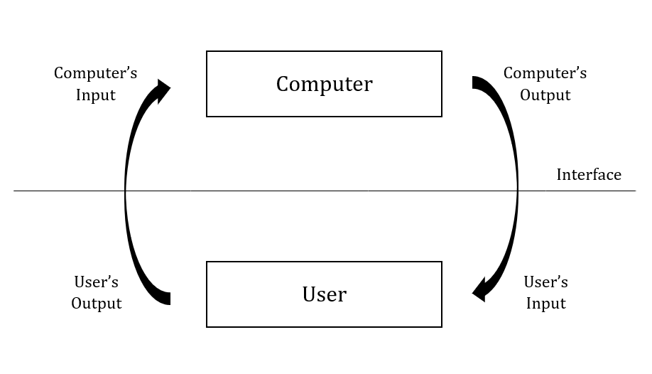
Model of HCI
“Model of HCI” by Dr. Greywolf under CC BY-SA 4.0 International; from Wikimedia Commons
→ Improve HCI with focus on cognitive and affective aspects
Cognitive Domain
Joint Human-Machine Problem Solving
- Examples: Cobots (collaborative robots) in engineering and surgery, autopilot systems, self-driving cars
- Project Focus
- Interaction Setting: Problem-solving game
- Improvement: Enhance trust by focusing on interpretability
Collaborative Robot
“Collaborative Robot” by TSorg under CC BY-SA 3.0 Germany; from Wikimedia Commons
Affective Domain 1/2
For effective and natural human-computer interactions, computers must not only recognize but also respond to human emotions (Affective Computing; Picard, 1997)
- Examples: Interfaces with emotional content, e.g., images on websites, mobile apps
- Project Focus
- Interaction Setting: Computerized exposure therapy
- Improvement: Automatic recognition of fear potential in images

Affective Computing (1997) by Rosalind Picard.
“Affective Computing (1997).” under All rights reserved or Unknown licensing information; from https://www.penguin.com.au/
Affective Domain 2/2
For effective and natural human-computer interactions, computers must not only recognize but also respond to human emotions (Affective Computing; Picard, 1997)
- Examples: Recommender systems, care robot, counseling chatbot
- Project Focus
- Interaction Setting: Computerized exposure therapy
- Improvement: Optimize sequence of stimulus presentation in response to patient's state
Affective Computing (1997) by Rosalind Picard.
“Affective Computing (1997).” under All rights reserved or Unknown licensing information; from https://www.penguin.com.au/
Overview
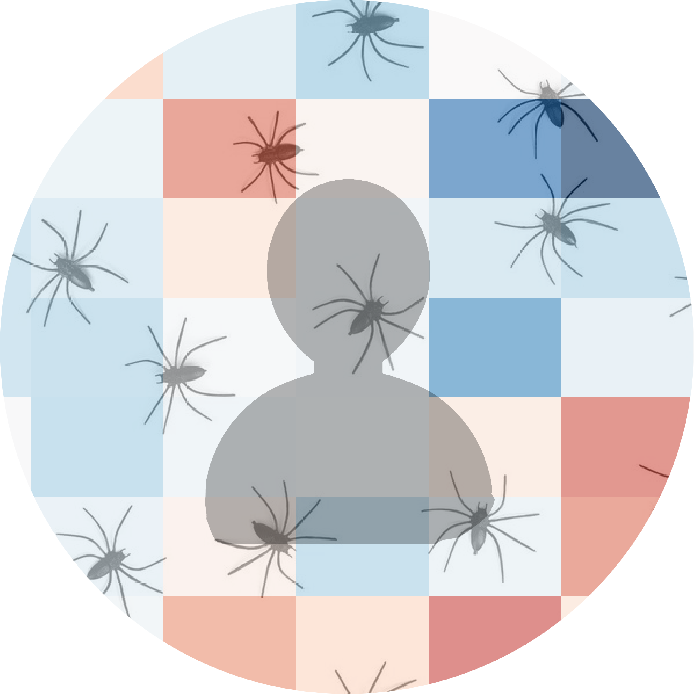
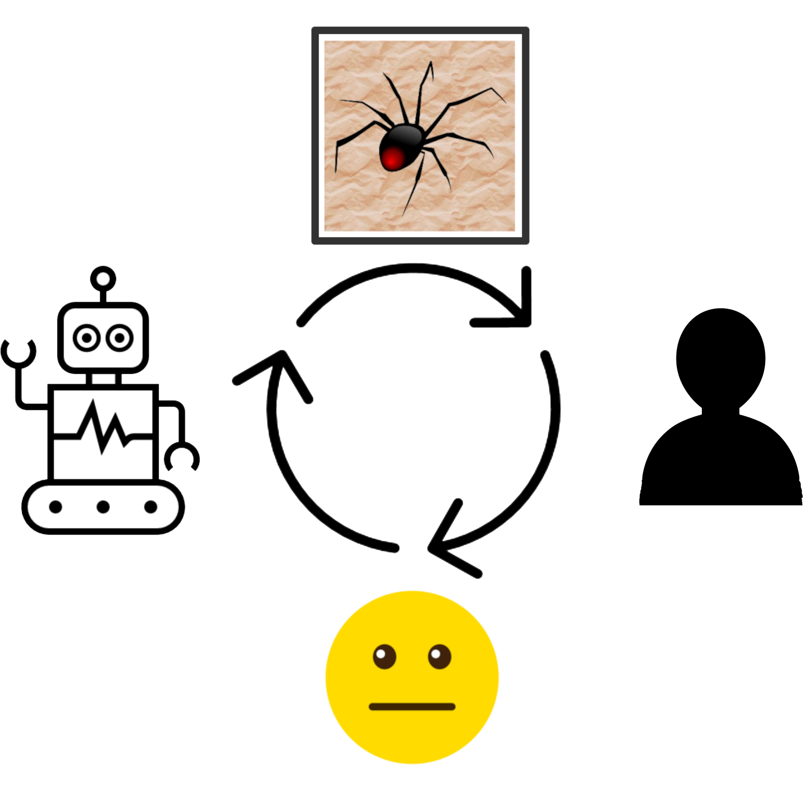
JOINT HUMAN-MACHINE PROBLEM SOLVING
Problem Setting
Machine Problem-Solving
- Increasingly taking over human domains
- AI getting more complex → black boxes → lack of trust
- Trust issues not new (Classical AI in 1950s)
Problem Setting
Machine Problem-Solving
- Increasingly taking over human domains
- AI getting more complex → black boxes → lack of trust
- Trust issues not new (Classical AI in 1950s)

George Dantzig (1914-2005), father of linear programming
“George Dantzig.” under CC0 1.0; from malevus.com
Evaluating Human Interpretability
- Human-in-the-loop approach to evaluate interpretability
- Understanding how a machine makes a decision
- Critical for trust and collaboration with machines

Human-in-the-loop: Enhanced algorithms through continuous human input.
“Human-in-the-loop” by Dominik Pegler under CC BY-SA 2.5 Generic; from Created using Google Docs
Combinatorial Design Problems

Knapsack Problem
“Knapsack” by Dake~commonswiki and Keenan Pepper under CC BY-SA 2.5 Generic; from Wikimedia Commons

{kind=link}
{kind=link}
{kind=link}
{kind=link}
{kind=link}
{kind=link}
{kind=link}
{kind=link}
{kind=link}

Traveling Salesman Problem
“Traveling Salesmans” by Xypron under Public domain; from Wikimedia Commons
{kind=link}
{kind=link}
- Many real-world scenarios (logistics, etc.)
- Can be solved by machines optimally (e.g., with Linear Programming)
- Can be solved by humans (if problem is small enough)
→ Good setting for human-machine collaboration
Bin-Packing Problem
- Abstract representation of real-world scenarios (e.g., scheduling)
- Pack items into boxes
- Goal: Fill the boxes as much as possible
- Constraint: You cannot overfill the boxes

Figure 1: A human performing the bin packing task.
Optimal Solutions

Figure 2: The machine (CP-SAT) providing possible optimal solutions.
Question
"What makes a solution interpretable?"
H1: Heuristic
- Humans use (greedy) heuristics → greedy solution
- Similarity to greedy solution is measured by graph edit distance(Sanfeliu & Fu, 1983)

→ Solutions more interpretable if similar to greedy solution
H2: Simplicity
- Bins can look more or less simple/complex
- Formalized as log-probability that a mixture model (2 dirichlet, 1 geometric distribution) returns for each bin composition

→ Solutions more interpretable if simple
H3: Representation
- Items and boxes can be sorted by size or at random
- Formalized as rank correlation between the actual order and the sorted order

→ Solutions more interpretable if sorted
Online-Experiment

N = 73 participants (pilot)
Online-Experiment

N = 73 participants (pilot)
Pilot Results

Figure 3: Fixed Effects Estimates of Predictor Variables on Choice in Multilevel Analysis. The plot displays the estimated fixed effects (with 95% confidence intervals) for the three predictors. The effects are adjusted for random effects at the group level, highlighting the marginal impact of each predictor on the outcome variable 'choice'.
- All three predictors relevant for people's choices
- Order and Heuristic most influental
- Explained variance: R²=0.17
Limitations
- Did we measure interpretability?
- Focus on small problems (diversity of solutions limited)
- Only tested for optimal solutions, no suboptimal solutions
→ Follow-up publication, e.g., with collaboration task to address limitation 1
Current Status
- Completed: Experimental design, analysis pipeline and pilot data collection
- Pending:
- Preregistration
- Confirmatory data collection & analysis
- Write draft
- Publication: Early 2025
- Target journals: International Journal of Human-Computer Studies, IEEE Transactions on Cybernetics, IEEE Transactions on Systems, Man, and Cybernetics, Computers in Human Behavior
Takeaways
- Humans seem to use solving heuristics during evaluation
- Adequate visual representation is requirement
- All factors may play a bigger role in larger problems
- Validation required


INTERACTION WITH EMOTIONAL AWARENESS
Problem Setting

Figure 4: The stimulus set.

Figure 5: Rating the fear level of each image.

Figure 6: Example rated images.
- Interaction Setting: Computerized Exposure Therapy
- Images with emotional content (e.g., spiders)
- Usage requires information, e.g., how much fear they provoke
- Fear ratings for 313 spider images (Karner et al., 2024)
- Improvement: Automatic evaluation of fear potential in new images
Deep Neural Networks
- Use deep neural networks to rate new images (LeCun et al., 2015)
- Pre-trained on large datasets (ImageNet; Deng et al., 2009)

Architecture of a convolutional neural network (CNN)
“CNN architecture.” under CC0 1.0; from developersbreach.com
Deep Neural Networks
- Use deep neural networks to rate new images (LeCun et al., 2015)
- Pre-trained on large datasets (ImageNet; Deng et al., 2009)
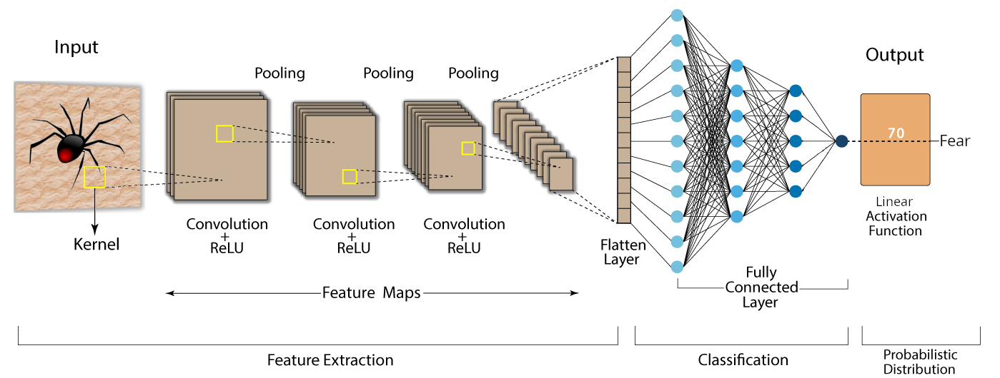
Architecture of a convolutional neural network (CNN)
“CNN architecture.” under CC0 1.0; from developersbreach.com
- Transfer Learning (Yosinski et al., 2014): Adapt & fine-tune on own data (313 images with fear ratings) → "Spider-Fear-Network"
Research questions
Research questions
Q1: Can computer vision models built for object recognition learn a latent construct such as fear?
Q1-1: How much data do we need?
Q1-2: What erros will it make?
Q2: How does the model arrive at its judgments and how do they differ from human judgments?
First Results: Predictions

Figure 7: Predictive performance of the CNN model for each image.
- Promising predictive accuracy
- Model: ResNet50 (He et al., 2015)
- Training is possible on standard PC hardware (hours–days)
Attributions
First Results: Attributions
Gradient-weighted Class Activation Mapping (Grad-CAM; Selvaraju et al., 2020)

First Results: Attributions
Gradient-weighted Class Activation Mapping (Grad-CAM; Selvaraju et al., 2020)

First Results: Attributions
Gradient-weighted Class Activation Mapping (Grad-CAM; Selvaraju et al., 2020)

First Results: Attributions
Gradient-weighted Class Activation Mapping (Grad-CAM; Selvaraju et al., 2020)

Feature Visualization
First Results: Feature Visualization
What does a neuron in each layer look for?
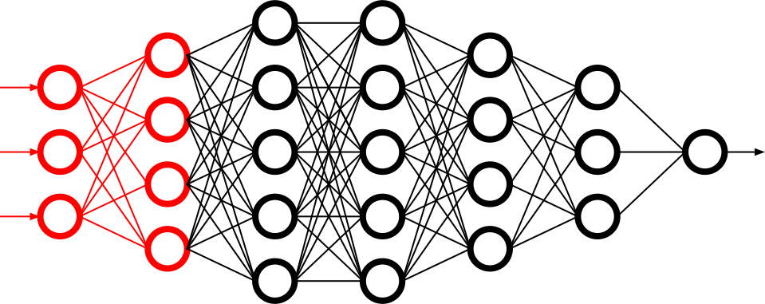
Early Layers
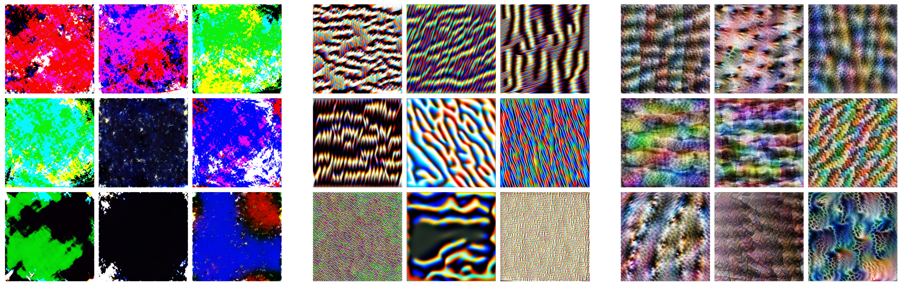
Figure 8: Activation patterns in 9 example neurons for layer 1 (left), layer 2.1 (middle) and layer 2.2 (right).
First Results: Feature Visualization
What does a neuron in each layer look for?
Intermediate Layers
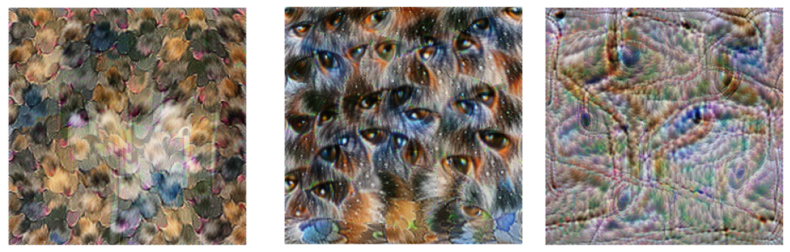
Figure 9: Activation patterns in example neurons for layer 3.1 (left), layer 3.2 (middle) and layer 3.3 (right).
First Results: Feature Visualization
What does a neuron in each layer look for?
Last Layers
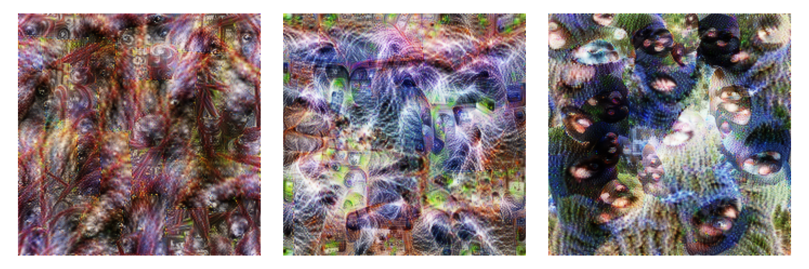
Figure 10: Activation patterns in example neurons for layer 4.1 (left), layer 4.2 (middle) and layer 4.3 (right).
First Results: Feature Visualization
What does a neuron in each layer look for?

Final Output Node
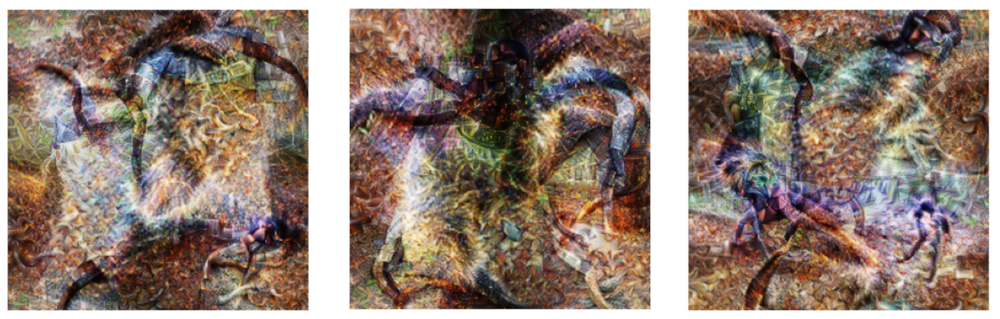
Figure 11: Three example images that maximize the final output "Fear".
Current Status
- Completed: Concept, Analysis Pipeline
- Pending:
- Explore more architectures
- Error & learning curve analysis
- Investigate overlap with human judgments
- Write draft
- Publication: 2025
- Target journals: International Journal of Human-Computer Studies, IEEE Transactions on Affective Computing, Computers in Human Behavior
Takeaways
- Computer vision models can learn latent construct like fear (Q1)
- Model’s judgments often, but not always, understandable (fear-eliciting stimulus not highlighted) (Q2)
OPTIMAL INTERACTION IN EXPOSURE THERAPY
Problem Setting
- Interaction Setting: Computerized Exposure Therapy
- Improvement: Find optimal stimulus sequence based on patient's state
- Challenges:
- Highly complex and individualized process
- Inconsistent and subjective protocol tailoring
- High-dimensional variable space
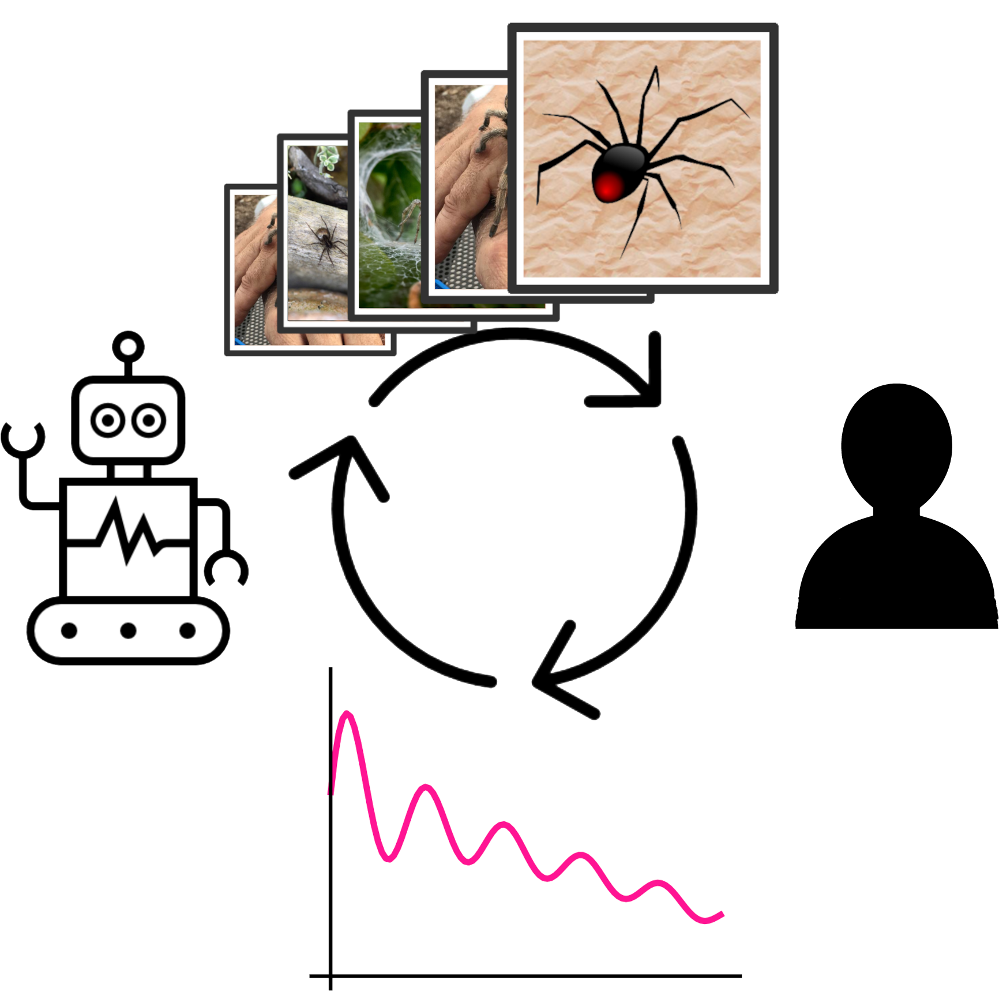
Reinforcement Learning
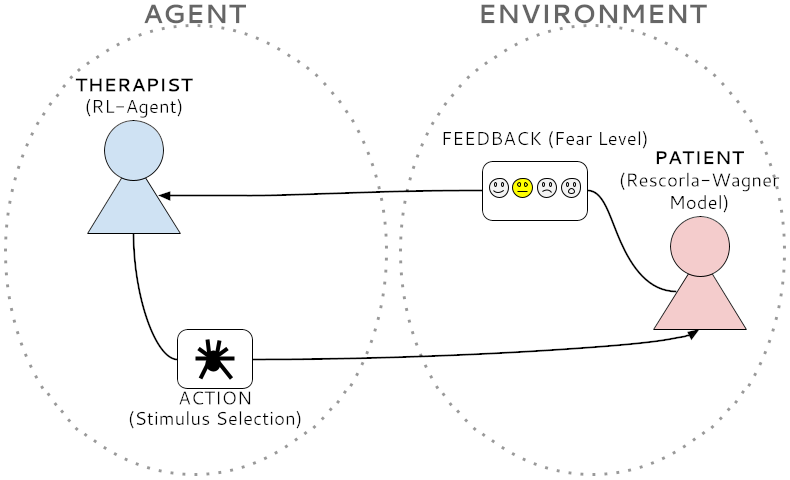
Figure 12: Exposure therapy as a reinforcement learning setting.
- Reinforcement Learning (RL; Sutton & Barto, 2018) offers a data-driven approach
- RL: Agent learns optimal actions through trial and error
- Therapist: Deep RL Algorithms like Deep Q Networks (DQN; Mnih et al., 2013)
- Simulated Patient: e.g., Rescorla & Wagner (1972) \(F_{\text{expected}} \leftarrow F_{\text{expected}} + \alpha (F_{\text{actual}} - F_{\text{expected}})\)
Research Questions
Q1: How can RL model fear extinction and optimize therapy protocols?
Q2: Can RL improve consistency and objectivity in exposure therapy?
Planned Methodology
Q1: How can RL model fear extinction and optimize therapy protocols?
- Selecting RL algorithms based on theoretical and practical applicability
- Conducting preliminary simulations using models such as Rescorla-Wagner
- Defining and testing reward functions to guide learning
- Running iterative computational experiments to refine algorithms
Q2: Can RL improve consistency and objectivity in exposure therapy?
Empirical validation with real subjects
Current Status
- Completed: Concept (partly)
- Pending:
- Literature Review
- Select Algorithms
- Run Simulations
- Design Experiment
- Publication: 2026
- Target journals: Foundations and Trends in Machine Learning, International Journal of Human-Computer Studies, IEEE Transactions on Affective Computing, Computers in Human Behavior
Open Science
All data, code, material, preregistrations will be made openly available on osf.io
Schedule

Summary
- First results show us how we can enhance trust by finding factors that matter for interpretability
- AI models can learn fear-potential in images, but the "how" remains open
- Reinforcement learning is a promising approach for finding good interaction protocols in computerized exposure therapy